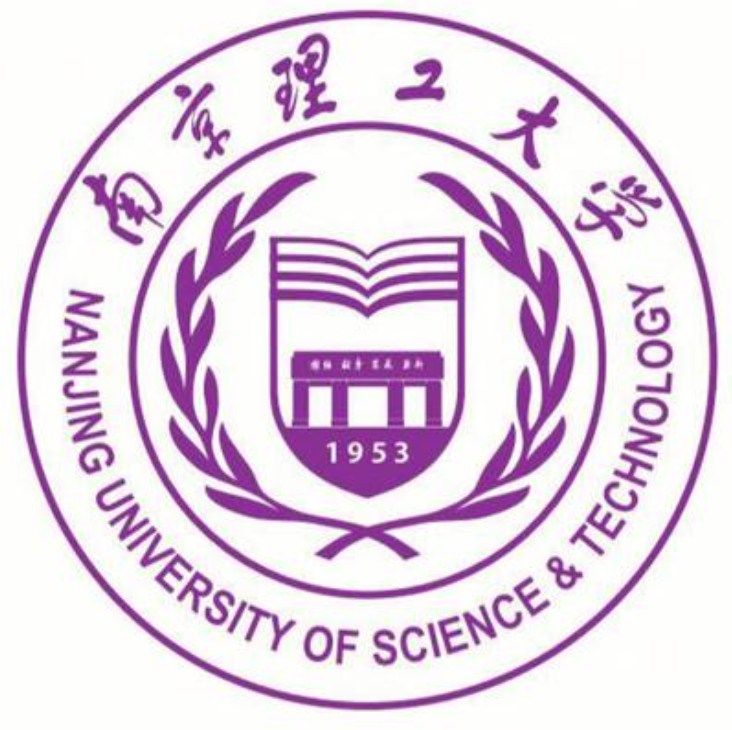

[1] Guo W, Sun Y, Li X, Ren Z, Sun Q. Collaborative Anchor Graph Learning with Similarity-Guided Alignment for Multi-View Clustering[J]. IEEE Transactions on Multimedia, 2026, 28: 10704-10717. (JCR Q1, IF=9.9; CCF-A)
Wei Guo 郭伟

I am a Ph.D. student in Electronic Information at Nanjing University of Science and Technology.
我目前是南京理工大学电子信息专业博士研究生。
My research interests include multi-view clustering, incomplete and unaligned multi-view learning, multi-omics cancer subtyping, and tensor learning. Feel free to reach out via 📧 guowei123@email.swu.edu.cn.
我的研究方向包括多视图聚类、不完整及未对齐多视图学习、多组学癌症分型和张量学习。欢迎通过 📧 guowei123@email.swu.edu.cn 与我联系。
Research interests: 研究兴趣： Multi-view Clustering, Incomplete and Unaligned Multi-view Learning, Multi-omics Cancer Subtyping, and Tensor Learning. 多视图聚类、不完整及未对齐多视图学习、多组学癌症分型和张量学习。
Before beginning my Ph.D., I received my master's degree from Southwest University in 2025.
攻读博士学位前，我于 2025 年获得西南大学硕士学位。
News 最新动态
Selected Publications 代表论文
# Equal contribution; * Corresponding author.
Multi-view Learning
[2] Guo W, Che H, Leung MF. Tensor-Based Adaptive Consensus Graph Learning for Multi-View Clustering[J]. IEEE Transactions on Consumer Electronics, 2024, 70(2): 4767-4784. (JCR Q1, IF=10.9; ESI Highly Cited Paper)
[5] Guo W, Che H, Leung MF, Jin L, Wen S. Robust Mixed-order Graph Learning for incomplete multi-view clustering[J]. Information Fusion, 2025, 115: 102776. (JCR Q1, IF=17.4)
[6] Guo W, Che H, Leung MF. High-order consensus graph learning for incomplete multi-view clustering[J]. Applied Intelligence, 2025, 55(7): 521. (JCR Q2, IF=3.5)
[7] Guo W, Che H, Leung MF, Yan Z. Adaptive multi-view subspace learning based on distributed optimization[J]. Internet of Things, 2024, 26: 101203. (JCR Q1, IF=7.6)
[9] Zhang H, Guo W*, Liu R, Yang Q, Xiao X, Li J, Lei G, Chen G. Anchor-aware representation learning for multi-view clustering[J]. Neurocomputing, 2025: 131441. (JCR Q1, IF=6.5)
[10] Guo W, Che H, Leung MF, Mu N, Dai X, Feng Y. Latent multi-view subspace clustering based on Laplacian regularized representation[C]. 2023 15th International Conference on Advanced Computational Intelligence (ICACI), 2023: 1-7. (EI-indexed conference)
Multi-omics & Cancer Subtyping
[3] Guo W, Che H, Sun Q, Su J, Peng Y, Leung MF. Federated Multi-omic Cancer Subtyping with Low-dimensional Feature Perception[J]. IEEE Transactions on Consumer Electronics, 2026. DOI: 10.1109/TCE.2026.3745550. (JCR Q1, IF=9.9; Accepted)
[4] Che H#, Guo W#, Leung MF, Cao Y, Liu C. Robust Diverse Multi-View Learning for Cancer Subtyping[J]. IEEE Transactions on Computational Biology and Bioinformatics, 2025, 22(6): 2685-2696. (JCR Q2, IF=3.4; CCF-B)
[8] Sun Y, Guo W*, Wei K, Zhang ML, Sun Q. Joint discriminative feature boosting and adaptive sample reweighting for multi-omics clustering[J]. Pattern Recognition, 2026, 180: 114587. (JCR Q1, IF=9.1)
Education 教育经历
Click an institution below to expand details.点击下方学校，展开详情。

Nanjing University of Science and Technology南京理工大学Ph.D. Student博士研究生
2025.09 — 2029.06 (Expected)2025.09 — 2029.06（预计）
- Degree学位
- Ph.D. in Electronic Information电子信息博士
- Status建设类别
- Project 211 University“211 工程”建设高校
- Location地点
- Nanjing, Jiangsu, China中国 · 江苏南京
- Advisor导师
- Prof. Quansen Sun孙权森教授
 Southwest University西南大学Master's Degree硕士研究生
2022.09 — 2025.062022.09 — 2025.06
Southwest University西南大学Master's Degree硕士研究生
2022.09 — 2025.062022.09 — 2025.06
- Degree学位
- M.S. in Next-Generation Electronic Information Technology新一代电子信息技术硕士
- Status建设类别
- Project 211 University“211 工程”建设高校
- Advisor导师
- Prof. Hangjun Che车杭骏教授
Yibin University宜宾学院Bachelor's Degree本科 2018.09 — 2022.062018.09 — 2022.06
- Degree学位
- B.S. in Computer Science and Technology计算机科学与技术本科